การเขียนโปรแกรมภาษา C สำหรับ AVR (ATmega328P): ตอนที่ 6#
Keywords: Atmel AVR MCU, ATmega328P, Bare-metal C Programming, AVR-GCC, avr-libc
- การเขียนโปรแกรมภาษา C แบบ Bare-Metal และการใช้ไลบรารี avr-libc
- วงจรสื่อสารข้อมูลด้วยบัส SPI (Serial Peripheral Interface)
- โค้ดตัวอย่าง: SPI Master with Enabled Interrupt
▷ การเขียนโปรแกรมภาษา C แบบ Bare-Metal และการใช้ไลบรารี avr-libc#
บทความในตอนที่ 6 สาธิตตัวอย่างการเขียนโค้ดภาษา C เพื่อใช้งานวงจรที่เรียกว่า SPI (Serial Peripheral Interface ภายในชิป ATmega328P ในโหมดการทำงานแบบมาสเตอร์ (SPI Master) มีการใช้คำสั่งหรือฟังก์ชันของไลบรารี avr-libc (Online User Manual) และใช้ Wokwi Simulator ในการจำลองการทำงานของโค้ดเพื่อตรวจสอบความถูกต้องในเบื้องต้น
▷ วงจรสื่อสารข้อมูลด้วยบัส SPI (Serial Peripheral Interface)#
SPI เป็นรูปแบบการสื่อสารข้อมูลระหว่างชิป หรือเรียกว่า "โพรโทคอล" (Protocol) สื่อสารข้อมูลบิตอนุกรมแบบซิงโครนัส (Synchronous Serial Communication) ดังนั้นจึงมีการสร้างสัญญาณ Clock เป็นตัวกำหนดจังหวะการทำงานของระบบบัส
SPI ทำงานตามสถาปัตยกรรมแบบ Master-Slave ซึ่งจะต้องมีอุปกรณ์ที่ทำหน้าที่เป็น "มาสเตอร์" (Master) และ "สเลฟ" (Slave) อาจมีหลายอุปกรณ์ได้ในระบบบัสเดียวกัน แต่โดยปรกติ จะมีอุปกรณ์ มาสเตอร์ เพียงหนึ่งตัว
- อุปกรณ์ มาสเตอร์ ทำหน้าที่สร้างสัญญาณ Clock (เรียกว่า SCK) สำหรับการทำงานของบัส SPI และสร้างสัญญาณควบคุม Slave Select หรือ Chip Select (เรียกว่า SS หรือ CS) เพื่อระบุว่า มาสเตอร์ จะสื่อสารกับอุปกรณ์ตัวใดที่ทำหน้าที่เป็น สเลฟ ในระบบบัสเดียวกัน
- อุปกรณ์ สเลฟ คอยตอบสนองต่อการสื่อสารจาก มาสเตอร์
โดยทั่วไปการสื่อสารด้วยบัส SPI จะใช้สัญญาณ 4 เส้น (4-Wire SPI Protocol)
- MOSI (Master Out Slave In): สัญญาณข้อมูลที่ใช้สำหรับส่งข้อมูลทีละบิตจาก มาสเตอร์ ไปยัง สเลฟ ทุกตัว
- MISO (Master In Slave Out): สัญญาณข้อมูลที่ใช้สำหรับส่งข้อมูลทีละบิตจาก สเลฟ ไปยัง มาสเตอร์ หากมีอุปกรณ์ สเลฟ หลายตัว ก็ใช้สัญญาณนี้ร่วมกัน
- SCK (Serial Clock): สัญญาณที่ถูกสร้างจาก มาสเตอร์ เพื่อกำหนดจังหวะการทำงาน หรือ Clock สำหรับอุปกรณ์ สเลฟ ทุกตัวในระบบบัส
- SS (Slave Select, Active-Low) สัญญาณที่ถูกสร้างจาก มาสเตอร์ เพื่อเลือกสื่อสารกับอุปกรณ์ สเลฟ แต่ละตัวในระบบบัส
การทำงานของวงจร SPI ภายในชิป ATmega328P ถ้าทำงานเป็น มาสเตอร์ ขา SS จะไม่ถูกควบคุมโดยอัตโนมัติ ดังนั้นจะต้องมีการกำหนดสถานะลอจิกให้เป็น LOW ก่อนส่งข้อมูลไปยังอุปกรณ์ สเลฟ และให้เป็น HIGH เมื่อส่งข้อมูลแล้วและจบการสื่อสารข้อมูล
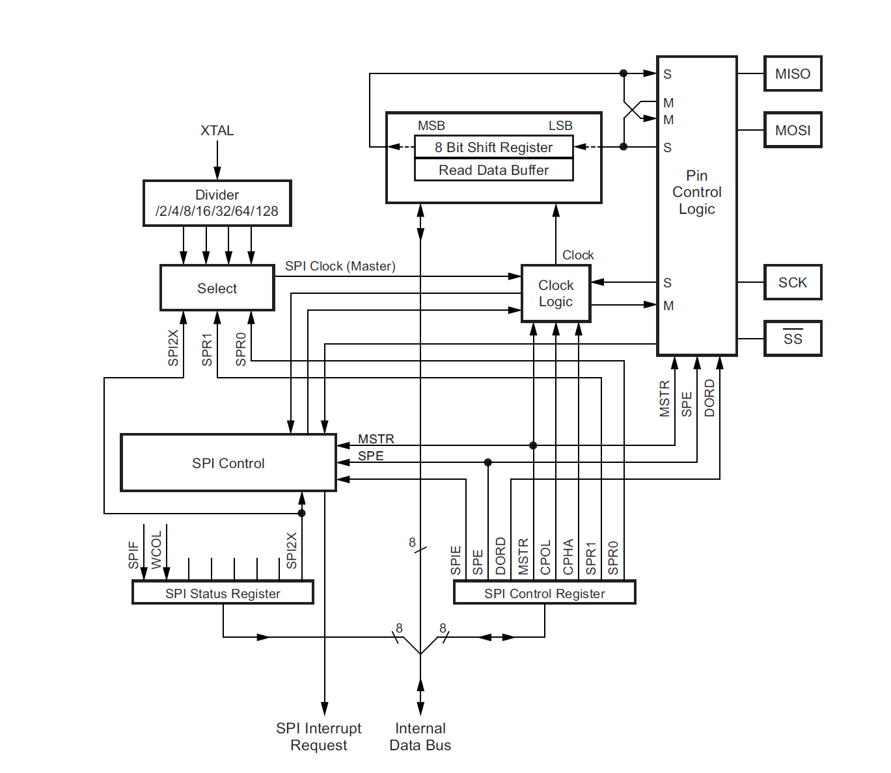
รูป: ผังแสดงองค์ประกอบของวงจร SPI ภายในชิป ATmega328P (Source: Atmel / ATmega328p Datasheet)
การทำงานของบัส SPI แบ่งได้เป็น 4 โหมด (SPI Modes: 0,1,2,3) จำแนกตามพารามิเตอร์สองตัวที่เรียกว่า CPOL (Clock Polarity) และ CPHA (Clock Phase)
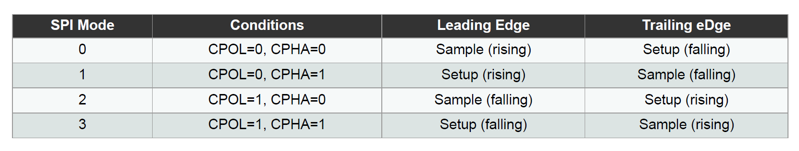
รูป: โหมดการทำงานของ SPI
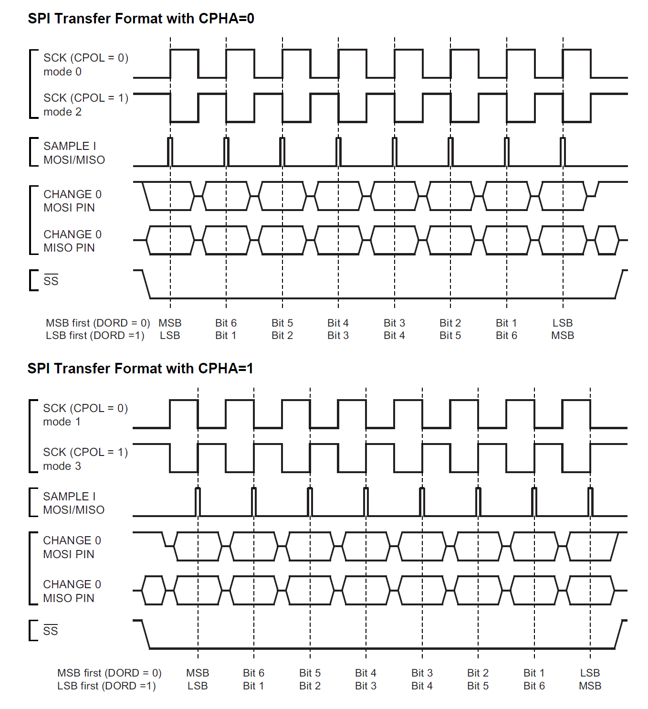
รูป: คลื่นสัญญาณของ SPI จำแนกตามโหมดการทำงาน (CPHA และ CPOL แบ่งออกเป็น 4 โหมด)
วงจร SPI ของ ATmega328P สามารถเลือกได้ว่า จะให้ทำหน้าที่เป็นอุปกรณ์ มาสเตอร์ หรือ สเลฟ และใช้ขาของชิปไมโครคอนโทรลเลอร์ดังนี้
MOSIตรงกับขา PB3 หรือ Arduino D11 pinMISOตรงกับขา PB4 หรือ Arduino D12 pinSCKตรงกับขา PB5 หรือ Arduino D13 pinSSตรงกับขา PB2 หรือ Arduino D10 pin (ใช้สำหรับกรณีที่อุปกรณ์ทำหน้าที่เป็น SPI Slave)
แนะนำให้ศึกษาเพิ่มเติมจากบทความ: "การสื่อสารด้วยบัส SPI และเขียนโปรแกรมด้วย Arduino"
ในการเขียนโค้ดเพื่อใช้งาน SPI ของ ATmega328P จะต้องศึกษาการทำงานของรีจิสเตอร์ที่เกี่ยวข้อง จากเอกสารของผู้ผลิต (ATmega328P Datasheet) เช่น
SPCR(SPI Control Register) รีจิสเตอร์กำหนดค่าการทำงานของ SPI เช่นSPE(SPI Enable) บิตเปิด (1) หรือปิด (0) การทำงานของ SPIDORD(Data Order) บิตเลือก MST First (0) หรือ LSB First (1)MSTR(Master / Slave) บิตเลือกโหมดการทำงาน ให้อุปกรณ์ทำหน้าที่เป็น Master (1) หรือ Slave (0)CPOL(Clock Polarity) และCPHA(Clock Phase) บิตจำนวน 2 บิต เพื่อเลือกโหมดการทำงานของ SPISPR[1..0]บิตจำนวน 2 บิต เพื่อเลือกค่าตัวหารความถี่สำหรับสัญญาณ SCK
SPSR(SPI Status Register) รีจิสเตอร์ระบุสถานะการทำงานของ SPI เช่นSPIF(SPI Interrupt Flag) บิตสำหรับแสดงสถานะอินเทอร์รัพท์ของ SPI หรือสถานะการส่งข้อมูลหนึ่งไบต์ครบแล้วSPI2X(Double SPI Speed Bit) ถ้าเป็น 1 หมายถึง คูณสองสำหรับความถี่ SCK
SPDR(SPI Data Register) ข้อมูลไบต์จะถูกเขียนลงในไบต์นี้ และถูกส่งข้อมูลออกทาง MOSI โดยอัตโนมัติ และจะรับข้อมูลเข้ามาทาง MISO เพื่อเก็บในรีจิสเตอร์นี้เช่นกัน
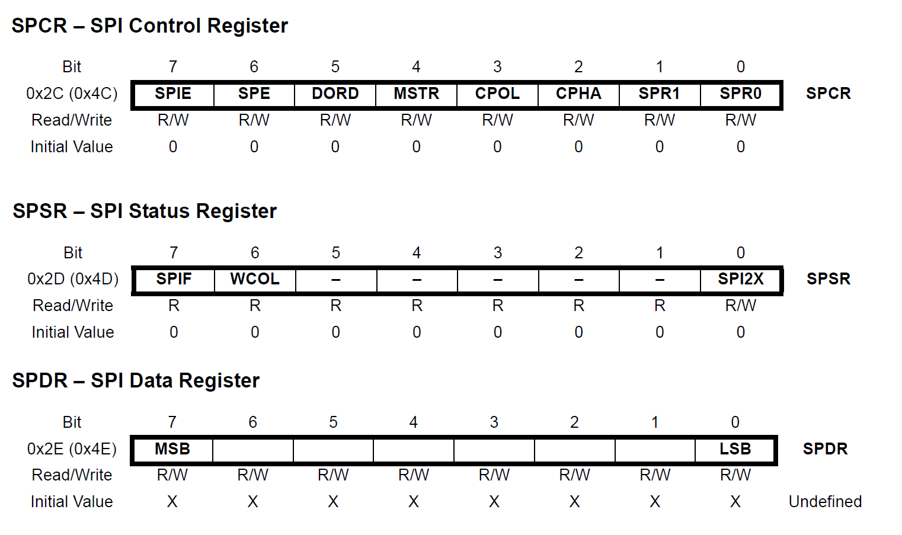
รูป: รีจิสเตอร์ที่เกี่ยวข้องกับการทำงานของ SPI ที่สำคัญได้แก่ SPCR SPSR SPDR
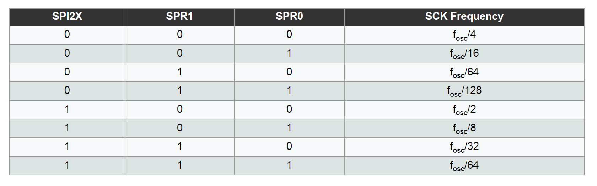
รูป: การกำหนดค่าบิตให้แก่ SPI2X, SPR1, SPR0 เพื่อเลือกตัวหารความถี่สำหรับ SCK
▷ โค้ดตัวอย่าง: SPI Master with Enabled Interrupt#
โค้ดตัวอย่างนี้ สาธิตการเปิดใช้งานวงจร SPI ของชิป ATmega328P
เพื่อส่งออกข้อมูลไบต์จากชุดข้อมูลตัวอย่าง (อ้างอิงโดยอาร์เรย์ data ซึ่งมีข้อมูลจำนวน 8 ไบต์)
เมื่อมีการเลื่อนบิตข้อมูลออกไปทางขา MOSI ก็มีการรับบิตข้อมูลกับเข้ามาทางขา MOSI
ในขณะเวลาเดียวกัน
ก่อนเริ่มต้นส่งข้อมูล จะต้องมีการกำหนดหรือตั้งค่าการทำงานในวงจร SPI
ซึ่งเป็นหน้าที่ของฟังก์ชัน initSPI() ในโค้ดตัวอย่าง เช่น
- เลือกบทบาทเป็น มาสเตอร์
- เลือกโหมดการส่งข้อมูล (เช่น โหมด 0 หรือ 3)
- กำหนดทิศทาง I/O ของขาชิปสำหรับสัญญาณของ SPI
- ตั้งค่าตัวหารความถี่เพื่อกำหนดความถี่ของสัญญาณ SCK (เช่น ใช้ความถี่ 8MHz)
ในตัวอย่างนี้ได้เลือกตัวหารความถี่เป็น 4
แต่มีการซิตบิต SPI2X (Double Clock Speed) ให้เป็น 1 จึงได้ความถี่
(16MHz/4) x 2 = 8MHz
นอกจากนั้นแล้วยังมีการเปิดใช้งานอินเทอร์รัพท์สำหรับ SPI เช่น
เมื่อมีส่งข้อมูลไบต์ในแต่ละครั้งได้สำเร็จแล้ว จะมีการสร้างเหตุการณ์อินเทอร์รัพท์ และเรียกใช้ฟังก์ชัน ISR
ที่มีชื่อว่า ISR(SPI_STC_vect) {...} โดยอัตโนมัติ
#include <avr/io.h>
#include <avr/interrupt.h> // for ISR(SPI_STC_vect)
#include <util/delay.h> // for _delay_ms()
#define SS PB2 // D10
#define MOSI PB3 // D11
#define MISO PB4 // D12
#define SCK PB5 // D13
#define DATA_LENGTH (8)
const uint8_t data[ DATA_LENGTH ] = {
0x55, 0x81, 0xE7, 0x01, 0x02, 0x3, 0x04, 0x05
};
volatile uint8_t done = 0;
volatile uint8_t data_index = 0;
volatile uint8_t data_recv[ DATA_LENGTH ];
ISR(SPI_STC_vect) { // Interrupt Service Routine for SPI
data_index++;
if (data_index == DATA_LENGTH) {
done = 1; // Set the done flag to 1.
PORTB |= (1<<SS); // Pull SS high
SPCR &= ~((1<<SPE)|(1<<SPIE)); // Disable SPI
} else {
data_recv[data_index] = SPDR;
SPDR = data[data_index];
}
}
void initSPI(void) {
PORTB &= ~(1<<SS); // Pull SS low
// Set up the SPI unit: MSB first, Master mode, F_osc/2
SPSR = (1<<SPI2X); // Set double speed for SPI clock
SPSR |= (1<<SPIF); // Clear the SPI interrupt flag
// Set as master and enable SPI interrupt
SPCR = (1<<MSTR) | (1<<SPIE); // Use div=4 (default)
//SPCR |= (1<<SPR0); // Use div=16
//SPCR |= (1<<CPOL) | (1<<CPHA); // Use SPI Mode 3
SPCR |= (1<<SPE); // Enable SPI
}
int main(void) {
// Set SS, MOSI, and SCK as outputs
DDRB |= (1<<SS)|(1<<MOSI)|(1<<SCK);
DDRB &= ~(1<<MISO); // Set MISO as input
PORTB |= (1<<SS); // Pull SS high
_delay_ms(1);
while (1) {
cli(); // Disable global interrupts
done = 0; // Clear the done flag
data_index = 0; // Reset the data index
PORTB &= ~(1<<SS); // Pull SS low
initSPI(); // Initialize / enable the SPI
SPDR = data[data_index]; // Start sending the first data byte
sei(); // Enable global interrupts
while (!done); // Wait until the done flag is set
_delay_ms(100);
}
return 0;
}
ตัวอย่างการจำลองการทำงานด้วย Wokwi Simulator
และใช้ Virtual Logic Analyzer บันทึกรูปคลื่นสัญญาณลงไฟล์ .vcd
แสดงผลด้วยโปรแกรม GTKWave
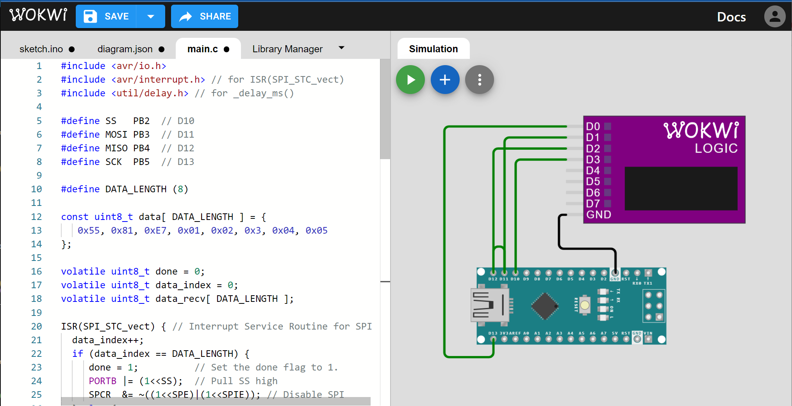
รูป: การจำลองการทำงานด้วย Wokwi Simulator
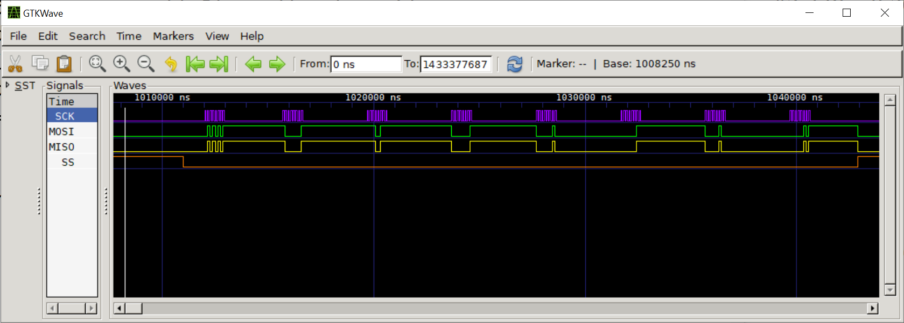
รูป: สัญญาณ SPI ในโหมด 0 เมื่อมีการส่งข้อมูล 8 ไบต์ ตามลำดับ (เลือกใช้ความถี่สำหรับ SCK เท่ากับ 8MHz หรือคาบกว้าง 125ns)
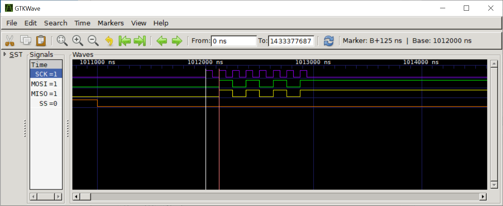
รูป: ช่วงเวลาที่มีการส่งข้อมูลไบต์แรก 0b01010101 หรือ 0x55
ลองมาดูตัวอย่างสัญญาณที่วัดได้โดยใช้ออสซิลโลสโคปเมื่อทดลองใช้กับอุปกรณ์ฮาร์ดแวร์จริง
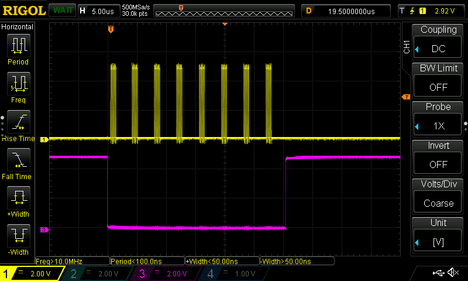
รูป: สัญญาณ SCK (CH1) และ SS (CH2) แสดงให้เห็นว่ามีการส่งข้อมูล 8 ไบต์
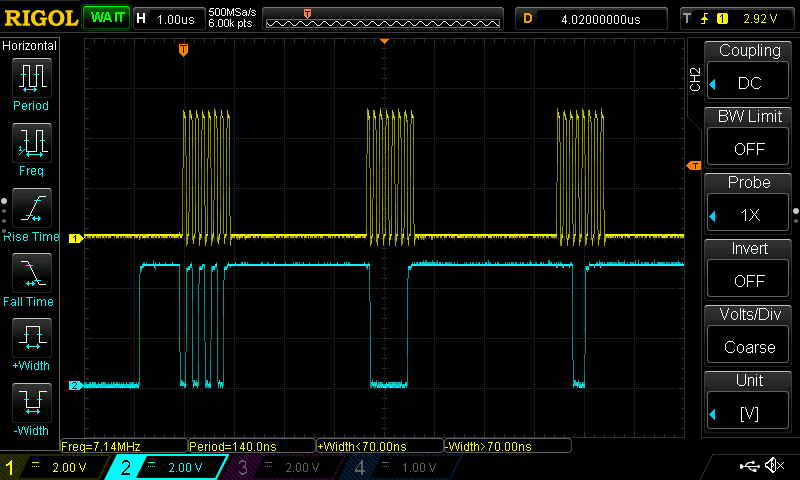
รูป: สัญญาณ SCK (CH1) และ MOSI (CH2) ช่วงที่มีการส่งข้อมูล 3 ไบต์แรก
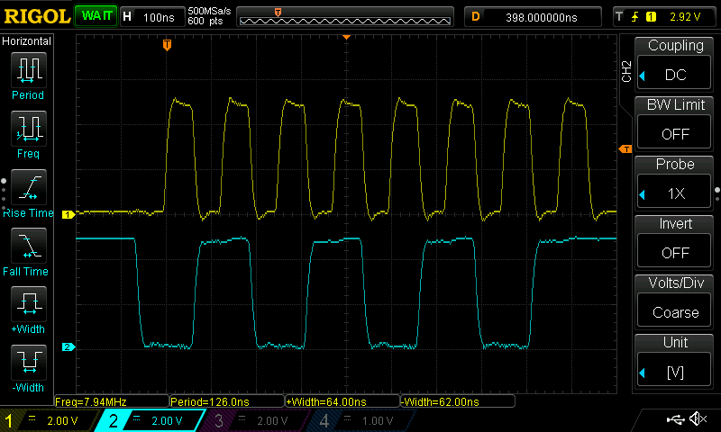
รูป: สัญญาณ SCK (CH1) และ MOSI (CH2)
ช่วงที่มีการส่งข้อมูลไบต์แรก 0b01010101 หรือ 0x55
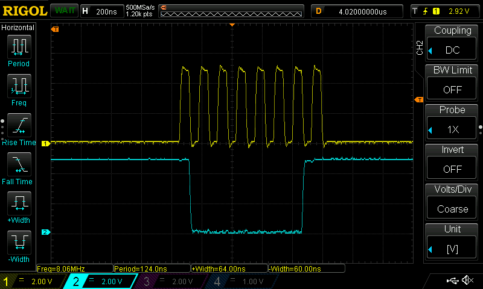
รูป: สัญญาณ SCK (CH1) และ MOSI (CH2)
ช่วงที่มีการส่งข้อมูลไบต์ที่สอง 0b10000001 หรือ 0x81
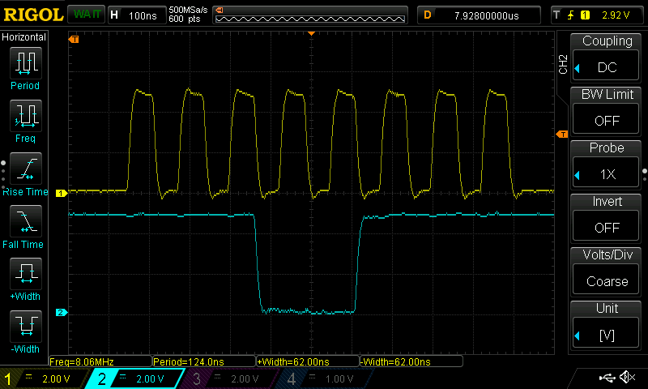
รูป: สัญญาณ SCK (CH1) และ MOSI (CH2)
ช่วงที่มีการส่งข้อมูลไบต์ที่สาม 0b11100111 หรือ 0xE7
ลองดูตัวอย่างรูปคลื่นสัญญาณดิจิทัล เมื่อใช้ USB-based 8-channel Logic Analyzer วัดสัญญาณจริงจากบอร์ด Arduino Nano ใช้งานร่วมกับซอฟต์แวร์ Sigrok PulseView โดยตั้งค่า Sample Rate เท่ากับ 24MHz
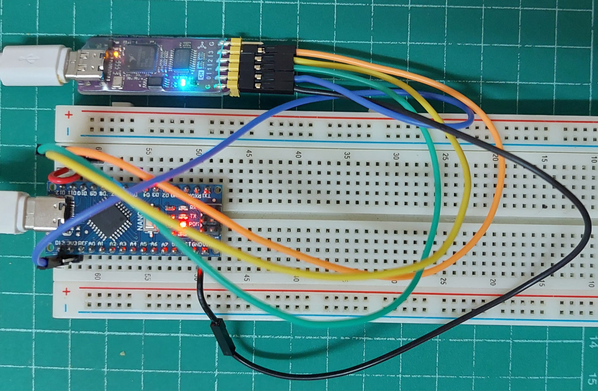
รูป: การวัดสัญญาณที่ขาของบอร์ด Arduino Nano ด้วย USB Logic Analyzer
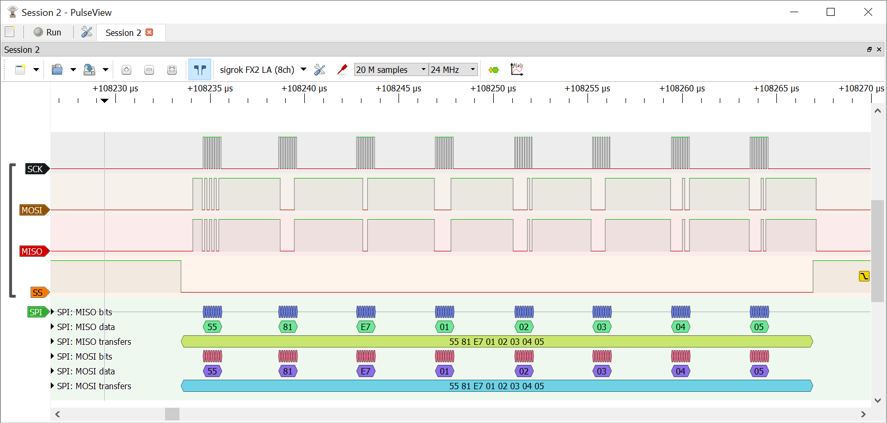
รูป: แสดงช่วงเวลาที่มีการส่งข้อมูล 8 ไบต์ (ส่งข้อมูลในโหมด SPI Mode 0 ความถี่ 8MHz) และมีการเปิดใช้งาน SPI Decoder เพื่อแสดงค่าของตัวเลขของข้อมูลไบต์
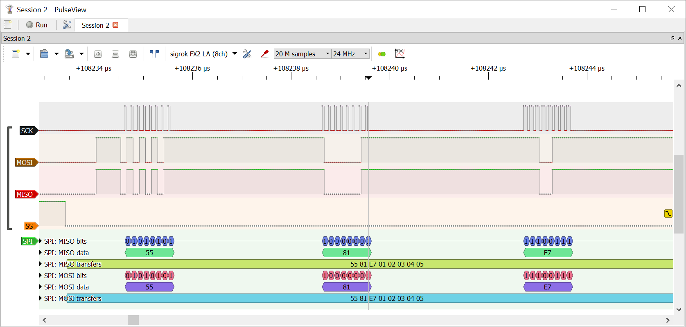
รูป: แสดงช่วงเวลาที่มีการส่งข้อมูล 3 ไบต์แรก ได้แก่ 0x55 0x81 0xE7
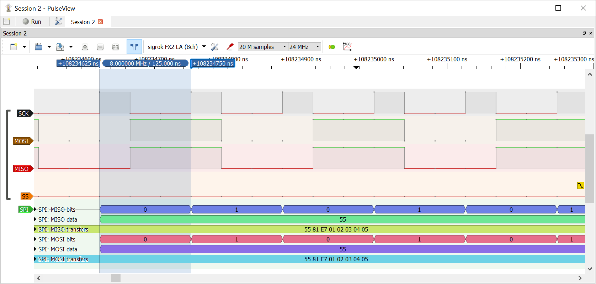
รูป: วัดคาบของสัญญาณ SCK (หนึ่งคาบได้ค่าประมาณ 125ns)
▷ กล่าวสรุป#
บทความนี้ได้นำเสนอตัวอย่างการเขียนโค้ดภาษาซีสำหรับ ATmega328P เพื่อใช้งานวงจร SPI โดยตั้งค่าให้ทำงานในโหมด SPI Master (มาสเตอร์) และส่งชุดข้อมูลไบต์ตามลำดับ มีการทดสอบโค้ดตัวอย่างด้วยวิธีการจำลองการทำงาน และทดลองด้วยอุปกรณ์ฮาร์ดแวร์จริง
This work is licensed under a Creative Commons Attribution-ShareAlike 4.0 International License.
Created: 2023-05-04 | Last Updated: 2023-05-07